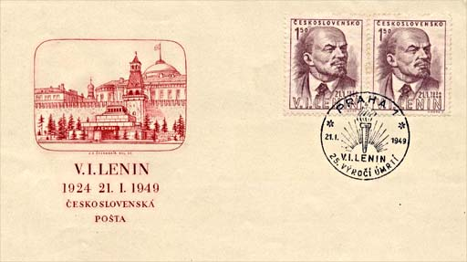
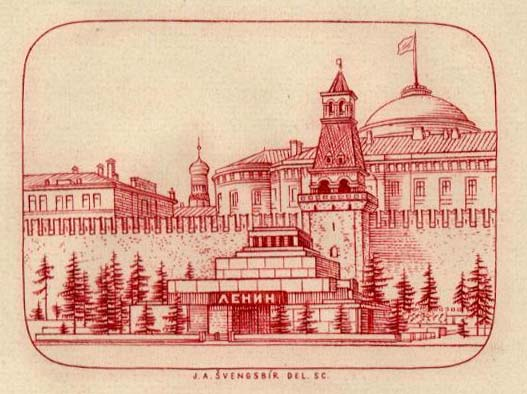
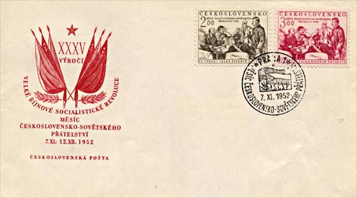
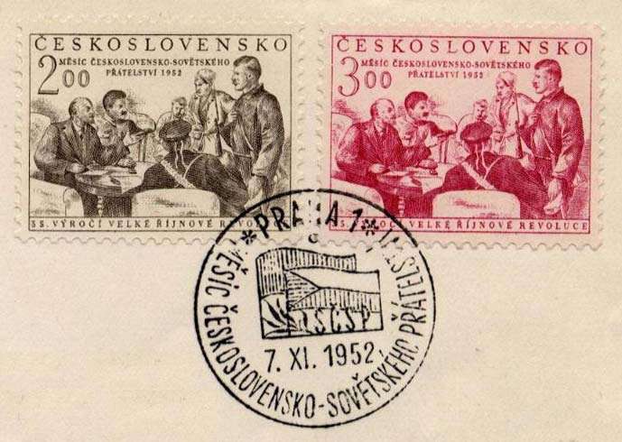
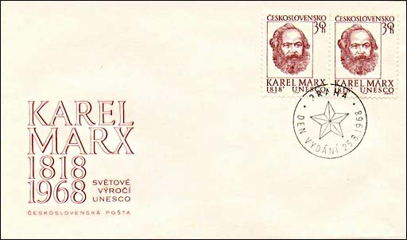
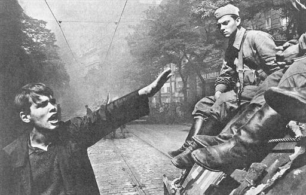
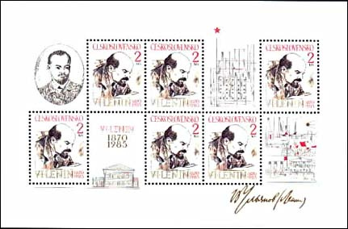
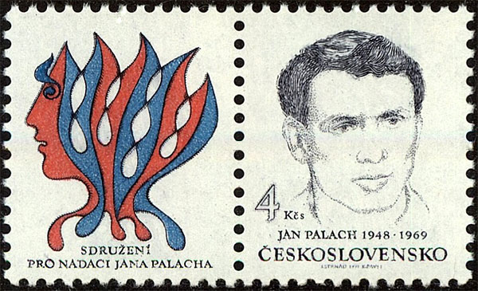
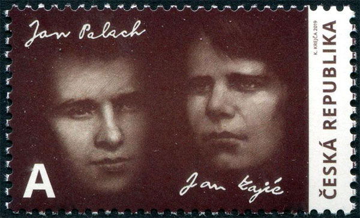

Friends to Death
The celebration of Lenin's anniversary was an mandatory act of faith toward the Communism, and for this reason many Czechoslovakian stamps are dedicated to him. The first of them, shown below on the FDC, appeared in 1949 and commemorated the 25th death anniversary of the disappeared ruler.

On the cachet, the engraver put the imagine of Lenin's Mausoleum in Moscow.

After a set dedicated to the 70th birth anniversary of Generalissimos Stalin (1949, not shown), and a stamp that shows Stalin and Gottwald (1951, not displayed), two stamps issued on 7th of Nov. 1952 celebrate the 35th anniversary of October 1917 putsch and the Month of Czechoslovakian-Soviet friendship, a month that has to celebrate the countries occupied by the USSR after the WW2.

The stamps show Lenin and Stalin discussing with soldiers of the Red Army (after a drawing of P.W. Vassiliev). Next to Lenin is, of course, the comrade Stalin...

During the so-called "Prague Spring", the reformist Communist party of CSSR tried to implemet a "Communism with a Human Face" slogan. The CSSR postal administration nevertheless issued a stamp commemorating the 150th birth anniversary of the founder of Communism, Karl Marx.

And even if UNESCO is also mentioned on the FDC, the whole is to demonstrate and reaffirm the alleged faith of Czech and Slovaks in Communism, but this wasn't enogh anymore.

A few month later the troops of the Warsaw Pact invaded the "reformist" Czechoslovakia. See above a young Czech greeting the Soviet troops with the Nazi salute, reminding them Hitler's occupation of Czechoslovakia, in March 1939.

Above we show a sheet issued by Czechoslovakia in 1985 (Sc. 2250, Mi. Block 62). Even the insignificant 115th years birth anniversary of Lenin had to be celebrated by the Czechoslovakia (re-occupied in 1968 by Soviet troops) by not less than a sheet of six stamps and four labels!
Point the images with the mouse pointer for more information.
UPDATE 2019
Jan Palach, a Czech student at Charles University, staged on 21 August 1968 a self-immolation protest against the occupation of Czechoslovakia by the armies of most Warsaw Pact states, led by the Soviet Union . He set himself on fire in the center of Prague on 16 January 1969. His funeral on 25 January 1969 was a major protest event against the continued occupation.

Czechoslovakia, 1991-08-09
Jan Zajíc was a Czech student who died in another self-immolation protest in Palach’s manner. Approximately a month later, disappointed with the continued so-called "normalization process", Zajíc decided to sacrifice his life in the name of the same liberty ideals.

Czech Republik, 2019-06-26
|
Published:
07/27/03. Revised:
Dec. Jan. 10, 2024
. |